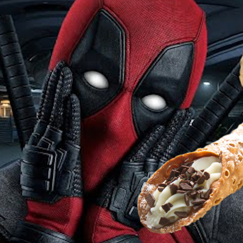

Un equipo con mucho gusto
Ill cannoli Gabriele li gusta mucho la informática, desde que era chico ha estado con superGlue en la silla, se tira horas y horas viendo la pantalla, aunque esté apagada. Su sueño es montar una empresa similar a Factoria F5, una empresa donde se generan nuevos empleos y nuevos empleados, actualmente se encuentra con la Mafia Cannoli a punto de romper los códigos y crear su nuevo lenguaje de programación.
La Cannoli Estefanie le gusta los paseos por la playa, programar con los amigos y leer sobre nuevas tecnologias. Esta Cannoli esta cubierta por una pasta de chocolate crujiente y rellena por una crema mascarpone con sabor a pistacho.
Giacomo Corso Repartidor oficial de Cannoli Amante de los animales y de la tecnologia. Se hace suspropios cannolis, sus favoritos con pepitas de chocolate.
Ya van 25 horneados y aun sigue fresco. Siempre güason y falto de mas risas. Se le reconoze ràpido, por su altura impepinable y su estupidez de igual descripción. Le gusta andar entre fogones para estar al tanto de todo, por eso es el chef de nuestra kitchen de chikens.
LLa cannoli Laura li encanta el mundo de la programación, aunque es muy nueva en este campo, está decidida a insertarse en la industria Tech. Su sueño es trabajar para una consultora de software, leer mucho, hacer bouldering, cuidar sus plantitas, salir con amigos y tomar mate con cannoli. Su puesto en la Squadra Cannoli es ayudante de cocina